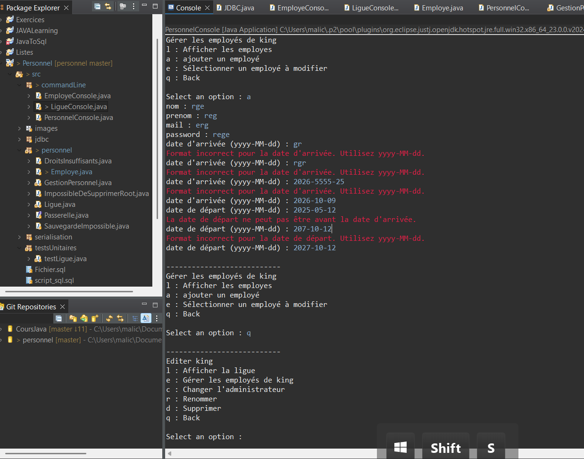

Mes Projets
Voici une sélection de travaux réalisés durant ma formation et mes projets personnels.
Présentation du Projet
L'application actuelle de gestion des employés des ligues, utilisée par la M2L, nécessite une évolution significative pour répondre aux nouveaux besoins organisationnels. Actuellement limitée à une utilisation mono-utilisateur avec une interface exclusivement en ligne de commande, cette solution doit être transformée en une plateforme collaborative et sécurisée.
L'objectif principal est de passer d'une application individuelle à un système multi-utilisateurs grâce à l'intégration d'une base de données relationnelle. Cette migration permettra une gestion centralisée des informations et une accessibilité simultanée par différents acteurs.
Système d'Habilitation à Trois Niveaux
Le projet introduit une granularité fine des droits d'accès, avec trois profils distincts. Les employés standards pourront consulter l'annuaire en lecture seule, sans possibilité de modification. Les administrateurs de ligue bénéficieront d'une application bureau complète avec droits d'écriture limités à leur ligue respective. Enfin, le super-administrateur conservera l'interface ligne de commande avec un accès étendu à toutes les ligues et la gestion des comptes administrateurs.
Architecture et Développement
Nous maintenons l'architecture 3-tiers existante tout en étendant ses capacités. Le projet s'appuie sur le code source disponible sur GitHub, la documentation fournie et une bibliothèque de dialogue en ligne de commande. Le défi technique réside dans l'équilibre entre la modernisation des interfaces et la préservation de l'architecture éprouvée.
Projet M2L - 4 Images

Arbre Heuristique
Admin

MCD
MCD

CLI
Ligne de commande

Dates
Dates